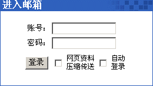

|
如果要登录webmail，请开启
浏览器
，例如
Internet Explorer
，并且在地址栏中输入正确的网址（
Uniform Resource Locator
）。例如，如果你的网站地址是 www.yourdomain.com，那么要进入webmail的地址应该是 www.yourdomain.com/webmail或是www.yourdomain.com/openwebmail。然而，这并不一定所有情况都适用。如果你无法找到webmail登录地址，请联络你的
系统管理员
以寻求协助。
当你已经找到你的登录页面时，你会发现屏幕会出现类似下面的登录界面。
|

|
在“帐号”后的文字区域中，输入你的用户名（或是帐号）；在“密码”后的文字区域中，输入你的密码。
注意：你的用户名不一定会和你的电子邮件地址一样。假如你不了解你的用户名，请和你的系统管理员联络。
|
在某些网站中，你的电子邮件地址、系统帐号、昵称都是有效的用户帐号。
范例：
|
网站名称：
|
www.muppetlabs.com
|
|
电子邮件地址：
|
bunson@muppetlabs.com
|
|
用户帐号：
|
bhoneydew
|
|
密码：
|
Burner
|
该用户可以用bunson或是bhoneydew作为用户帐号，登录webmail系统。
假如你喜欢，你可以点选“自动登录”左边的方块，下次当你使用webmail系统时，你的帐号会被自动地填入，你只需要输入密码即可。
输入完账号和密码后，点击“登录”，或是敲击键盘上的“Enter”键。如果输入的信息都是正确的，就可以顺利进入你的邮箱了。
如果你是第一次使用Open Webmail系统，你可能需要设置一些选项参数，请参考
基本设置选项
。如果你先前已经做好设置，系统会直接跳到
使用你的收件箱
。
|